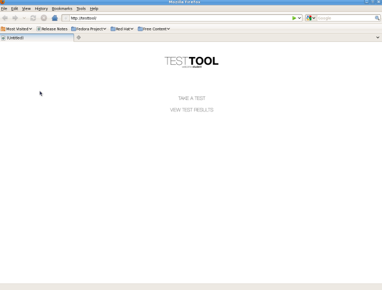
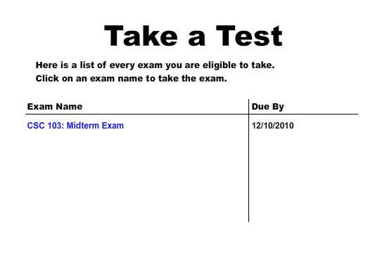
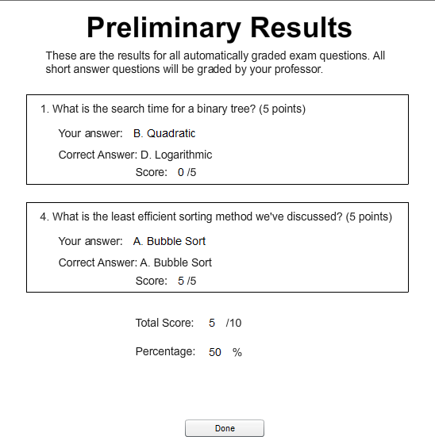
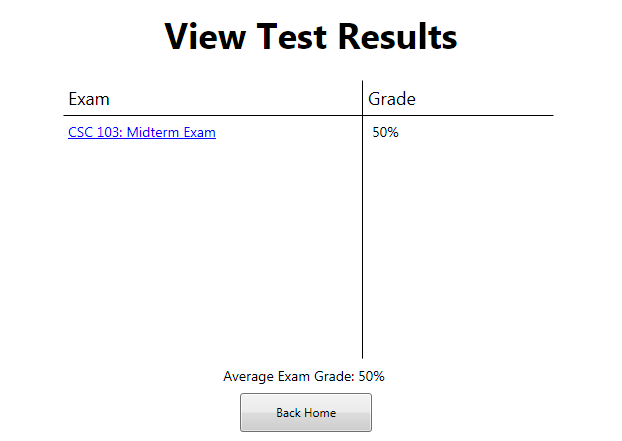
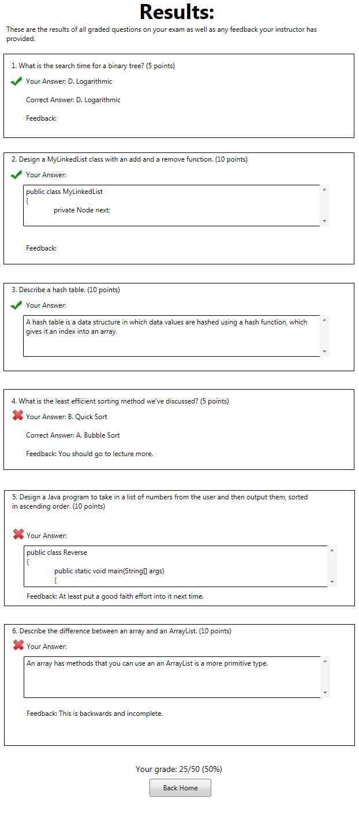

The scenarios that are in this section describe a student taking an exam that the instructor has distributed. The tool piggybacks off of the Cal Poly Portal authentication system. As a result, the user does not have to explicitly log in using the program.
After loading the page, the software will go to a home screen, where the user can Take a Test or View Test Results.

Figure 2.5.1: Home Screen
Hereafter, images will not show the outer web browser UI.
When the user presses Take a Test, he will be taken to the Take a Test screen. Here the student will choose an exam to take.

Figure 2.5.2: Take a Test Screen
Figure 2.5.3: The first page of exam questions (empty and filled).
Figure 2.5.4: The first page of exam questions (empty and filled).
Figure 2.5.5: The first page of exam questions (empty and filled).
Figure 2.5.6: The first page of exam questions (empty and filled).
Here the user may do several things. If the user clicks either Previous Page or Next Page the user will be taken to the previous or next page of exam questions, respectively. On coding questions, students may use their own IDE to answer the question and they will also be provided the testing script to test their own solution. These are accessed by clicking the External IDE and Test Code buttons, respectively.
If the user clicks Submit, the exam will be submitted in its entirety and the user will no longer be able to work on it. If automatic grading is configured, then the user will be taken to a scoring screen, where the user may see his preliminary grade and individual results on each question. Click Back Home to go back to the Home screen.

Figure 2.5.7: The preliminary grade screen
Back on the Home Screen, if the user presses View Test Results, the user will be taken to a list of all exams that he has taken, which shows the grades he received on each exam, as well as an average of all grades.

Figure 2.5.8: List of all exams and their grades
The user may click on individual exams to see a detailed results screen (see Figure 2.5.6). Clicking Back Home will send the user back to the Home screen (see Figure 2.5.1).

Figure 2.5.9: The Test Results screen
On the Results screen, the user may see his final grade, individual question results, and feedback left by the instructor. Clicking Back Home will send the user back to the Home Screen (See Figure 2.5.1).